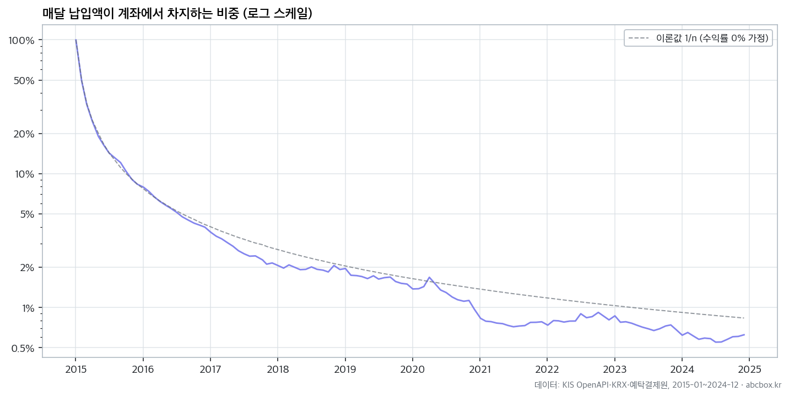
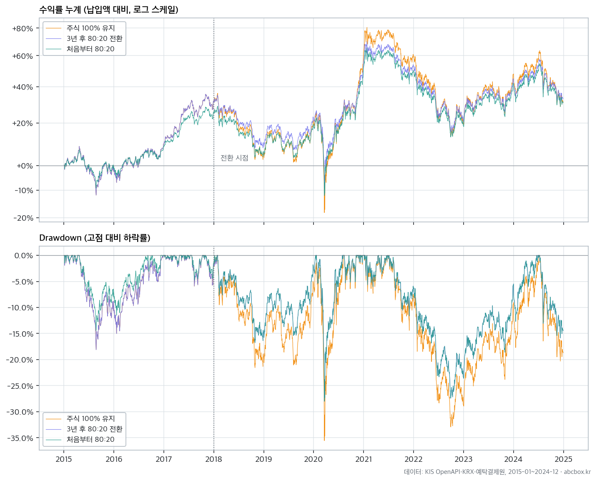

지난 글에서 직장인의 투자 방법으로 매달 일정 금액으로 자산을 매수하는 정액 적립식(DCA) 투자에 대해 얘기했다. 상승장에서는 일시 거치가 유리하지만 직장인의 투자 성향을 고려하고 하락장, 횡보장의 손실 분산 측면에서 적립식이 장점이 있음을 봤다.
그런데 적립식을 몇 년간 계속하면 계좌에 쌓이는 금액이 커지고 상대적으로 매달 새로 넣는 금액(월 납입액)은 전체 금액에 비해 작아지므로 매수 분산 효과도 약하게 된다. 다시 말해 점차 일시 거치와 비슷한 상황이 되므로 위험 분산을 위해서는 자산배분에 대해 고민하는 것도 필요하다.
계좌 평가액이 커질수록 월 납입액의 영향은 작아진다
아래는 코스피 200 ETF에 대한 백테스트로 매월 납입액의 비중이 어떻게 줄어드는지 확인한 차트다. 점선은 수익/손실이 없이 그대로 적립됐을 때 납입액이 전체 금액에서 차지한 비중이고(“n분의 1”) 실선은 자산 증감에 따라 실제로 납입액이 차지한 비중이다. 전체 금액이 변동한 결과 2년째에는 4.0%, 3년째에는 2.1%, 10년째에는 0.6%까지 줄어든다.

시간이 흐를수록 매달 납입액의 비중이 작아지므로 가격 변동에 대한 분산 효과도 줄어든다. 3년째의 납입액 비중이 2.1%면 꽤 낮아져서 아래 백테스트에서는 자산배분 전환 시점으로 선택해보았다.
목돈 투자 위험을 줄이는 가장 흔한 방법은 주식과 채권으로 나누는 것
목돈에 대한 투자 위험을 줄이는 일반적인 방법은 자산배분인데 그중에서도 가장 흔한 것이 주식과 채권으로 배분하는 것이다. 주식은 기업 성장을 반영하여 가격 변동이 크고 채권은 상대적으로 변동성이 작으며 때로는 주식과 반대로 움직이기 때문에 주가 하락 시 충격을 완화하는 역할을 기대할 수 있다.
자산배분의 원칙은 구성 자산의 비율을 일정하게 유지하는 것이다. 예를 들어 주식 80%, 채권 20%를 목표로 잡았는데 주가 상승으로 비중이 85:15가 됐다면 일부 주식을 팔고 채권을 사서 80:20으로 다시 맞춘다. 이걸 리밸런싱이라고 한다.
백테스트
자, 그럼 이제 백테스트 결과를 알아보자. 2015년 1월부터 2024년 12월까지 10년 기간에 대해 아래 세 가지 전략을 비교했다.
- 주식 100% - 10년 내내 주식 100%로 DCA 유지
- 3년 후 80:20 - 3년 동안 주식만 적립하고 2018년 1월에 주식 80% + 채권 20% 적립 포트폴리오로 전환
- 처음부터 80:20 - 첫 달부터 주식 80%, 채권 20%로 적립
2, 3번의 경우 매달 목표 비중에 가깝도록 매수하고 매년 1월에 리밸런싱하는 것으로 테스트했다.
아래 차트를 보면 "주식 100% 유지"가 상승 폭이 크지만 하락 폭도 크다. 반면에 이 기간 말미의 수익은 셋 다 비슷해보인다.

아래 수치로 확인해보자.
| 전략 | 최종 평가액 | 누적 수익률 | MDD | 변동성 | 최악 월간 수익률 |
|---|---|---|---|---|---|
| 주식 100% 유지 | ₩157,544,306 | 31.3% | -35.6% | 17.4% | -12.7% |
| 3년 후 80:20 전환 | ₩159,904,233 | 33.3% | -28.0% | 14.3% | -10.2% |
| 처음부터 80:20 | ₩156,966,111 | 30.8% | -28.0% | 13.8% | -10.2% |
결과를 보면 "주식 100% 유지"와 “3년 후 80:20 전환” 중 후자가 높은 수익률을 보이고 있다. 중요한 건 MDD다. MDD는 고점 대비 저점까지의 최대 하락률로 -35.6%에서 -28.0%로 7.6%포인트 낮아졌다. 즉, 최대 손실 정도가 낮아진 것이다. 주가가 하락하더라도 조금은 더 편안한 투자가 될 수 있다.
한편 처음부터 80:20으로 투자한 경우와 3년 뒤 전환한 경우의 MDD는 같지만 최종 평가액은 3년 뒤 전환한 쪽이 약 294만원 많았다. 이 특정한 기간 동안의 수익 차이일 수 있으므로 일반화할 수는 없다.
참고: 백테스트 전제 및 조건
- 기간: 2015년 1월 ~ 2024년 12월, 총 120개월
- 월 납입액: 100만원, 매월 첫 거래일 매수. 총 투자액은 100만 원 x 120개월 = 1억 2천만원
- 주식: KODEX 200(069500)
- 채권: KIWOOM 국고채3년(114470, 옛 KOSEF)
- 체결가: 매수일의 고가와 저가의 중간값
- ETF를 사고 남은 자투리 현금은 이자 없이 다음 달로 이월
- 매수/매도 거래비용 0.015% 반영
- 국고채/금 등 과세 대상 ETF의 매도 차익과 채권 분배금에 배당소득세 15.4% 반영 (KODEX 200은 국내 주식형 ETF라 매매차익 비과세, 분배 재투자 효과는 코스피200 NTR/가격지수 괴리율로 근사)
- 실제 과표기준가 대신 매매차익 전액에 과세하는 보수적인 근사 사용
- 종료일까지 계속 보유하는 것으로 가정해 청산 비용과 미실현 세금은 제외
- MDD와 변동성은 투입한 납입액 때문에 수익률이 왜곡되지 않도록 매수 전후를 나눠 계산함
누적 수익률은 최종 이익을 총 납입액으로 나눈 단순 수익률이다.
채권이 얼마나 영향을 줄까
그럼 채권의 비중에 따라서는 어떻게 달라질까? 시작 3년 뒤 채권 비중을 20% 외에도 여러 가지로 바꿔 추가로 실험해봤다.
| 전환 후 채권 비중 | 최종 평가액 | 누적 수익률 | MDD | 변동성 |
|---|---|---|---|---|
| 0% (주식 100%) | 157,544,306 | 31.3% | -35.6% | 17.4% |
| 10% | 158,824,939 | 32.4% | -31.4% | 15.8% |
| 20% | 159,904,233 | 33.3% | -28.0% | 14.3% |
| 30% | 160,683,228 | 33.9% | -24.6% | 12.9% |
| 40% | 161,330,987 | 34.4% | -21.8% | 11.5% |
| 50% | 161,757,971 | 34.8% | -19.0% | 10.3% |
역시 MDD가 가장 눈에 띄는 차이로서 채권 비중이 높을수록 MDD가 낮아졌다. 채권 비중이 높으면 MDD가 낮아져 하락에 덜 반응한다는 것이 대체적인 경향이다.
그런데 수익률 또한 상승했다. 위험은 줄고 수익은 높아졌으니 좋은 결과지만 채권 비중이 수익을 높여준다는 일반화는 할 수 없다. 2018년 조정, 2020년 코로나 폭락, 2022년 주식/채권 동반 상승/하락이 모두 있었던 기간이고 국고채 3년 채권과 주식이 잘 맞물린 결과이므로 다른 기간이나 금리 상황으로 일반화할 수는 없다.
자산배분으로 내 목돈을 지키자
주식과 채권 혼합을 대표적인 자산배분으로 얘기했는데 유명한 투자 전문가들이 그 외 다양한 방법을 거론했다.
- 60/40 포트폴리오: 주식 60%, 채권 40%의 고전적 조합이다.
- 쓰리 펀드 포트폴리오: 국내 또는 미국 주식, 해외 주식, 채권으로 지역까지 분산한다
- 영구 포트폴리오: 주식, 장기채, 현금, 금을 25%씩 보유해 여러 경제 국면에 대비한다
- 올웨더: 위험 균형을 고려하여 주식보다 채권 비중이 크고 금, 원자재도 포함
- 글라이드 패스: 주식, 채권을 조합하되 목표 시점을 정해두고 그 시점에 가까워지면 채권을 늘린다. TDF가 사용하는 방식
"영구 포트폴리오"와 같이 금이나 현금을 섞을 수도 있다. 금은 최근 몇 년간 급등했기 때문에 수익이 더 높을 수 있다. 하지만 자산배분에서 중요한 것은 수익률이 높은 조합을 찾는 게 아니다. 약간 수익이 낮을 수 있더라도 위험과 변동성을 내가 감당할 수 있는 정도로 조절하는 것이 목표기 때문에 배분 비중을 정하고 그에 따라 꾸준히 투자하는 것이다.
어떻게 실행할까
100% 주식 적립 3년 후에 자산배분으로 전환하는 예시로 봤는데 실제 실행하려면 목표 시점을 두고 그에 맞춰 자산을 배분하는 것이 좋다. 예를 들어 집을 산다든지, 은퇴하는 시점에 돈이 필요할 것이므로 그에 맞춰 내 자산의 변동성이 줄도록 단기채나 현금 자산의 비중이 높도록 자산배분을 고려해야 한다. 일찍 돈이 필요하다면 자산배분도 일찍, 더 나중에 필요하다면 그만큼 주식 위주의 공격적 투자를 좀 더 유지해볼 수 있다.
- 목표 시점과 목표 금액 정하기
- 예상 수익률과 위험을 감안해 자산배분 정하기
- 자산배분 목표에 따라 적립하고 1년에 한 번 정도 리밸런싱하기
알아서 해주는 ETF
직접 자산배분과 리밸런싱을 하는 건 재밌다면 재밌지만 번거로워하는 사람들도 많기 때문에 알아서 해주는 ETF가 나와 있다.
- TRF(Target Risk Fund) ETF는 자산 비중을 목표치로 설정한다. ETF 상품명에 7030, 5050, 3070 같은 TRF가 있는데 글로벌 선진국 주식과 국내 채권을 70:30처럼 유지하는 것이다.
- TDF(Target Date Fund) ETF는 목표 은퇴 연도에 맞춰 위험을 낮춘다. 상품명에 2040, 2050 등의 연도가 붙은 것들이 있는데 목표 연도에 가까워지면 주식 비중을 줄이고 채권 비중을 점차 늘린다. 위에서 글라이드 패스라고 한 것이 이것이다.
- 채권혼합 ETF는 특정 종목 또는 주가지수와 채권을 알아서 혼합 투자해주는 상품이다. 특정 종목에 집중된 상품인 경우 위험이 상대적으로 더 높을 수 있다.
이런 ETF는 운용사가 알아서 자산을 배분해주고 리밸런싱하므로 관리가 쉽다. 적은 돈으로도 목표 비중을 맞출 수 있고 개인 투자자가 시장 상황에 동요돼 원칙을 깨는 일도 줄일 수 있다. 여러 상품이 있으므로 자신의 투자 목표, 상품의 비용, 과거 실적 등을 잘 확인하고 선택해야 한다.
참고 1 - 국고채 3년물을 선택한 이유
국고채 10년은 금리에 민감하다. 최근 몇 년간 금리 상승과 인플레이션 영향이 있었기 때문에 국고채 3년물만큼의 수익은 거두지 못했다.
아래는 KIWOOM 국고채10년(148070)에 대해서도 2015년 ~ 2024년 같은 조건으로 테스트한 것이다. 이 역시 해당 기간의 특수 상황임을 감안해야 한다.
| 전환 후 채권 비중 | 최종 평가액 | 누적 수익률 | MDD | 변동성 |
|---|---|---|---|---|
| 0% | ₩157,544,306 | 31.3% | -35.6% | 17.4% |
| 10% | ₩157,840,403 | 31.5% | -31.4% | 15.8% |
| 20% | ₩158,058,083 | 31.7% | -29.3% | 14.4% |
| 30% | ₩158,010,598 | 31.7% | -27.5% | 13.0% |
| 40% | ₩157,841,501 | 31.5% | -25.8% | 11.7% |
| 50% | ₩157,575,592 | 31.3% | -24.5% | 10.6% |
참고 2 - 최근 상승장에서는…
2023년부터는 코스피가 급격한 상승과 하락을 경험한 시기다. 아래는 2023년부터 시작하여 1년 후 국고채3년 20%로 전환하고 2026년 8월 현재까지 44개월 동안 4,400만원을 투자하는 경우의 결과다. 상승장에서는 역시 주식 비중이 높을수록 수익과 MDD 모두 높음을 볼 수 있다.
| 전환 후 채권 비중 | 최종 평가액 | 누적 수익률 | MDD | 변동성 |
|---|---|---|---|---|
| 0% | 128,392,002 | 191.8% | -40.8% | 35.3% |
| 10% | 117,636,978 | 167.4% | -37.7% | 32.1% |
| 20% | 107,433,761 | 144.2% | -35.3% | 29.4% |
| 30% | 98,488,080 | 123.8% | -33.0% | 26.9% |
| 40% | 90,017,588 | 104.6% | -30.2% | 24.2% |
| 50% | 82,007,809 | 86.4% | -27.0% | 21.4% |
변동성은 수익과 손실의 양면을 가지고 있다. 많이 벌 수 있다는 것은 많이 잃을 수도 있다는 것이다. 적립식 투자를 통해 자산이 모인 후에는 지키는 것도 중요하다. 자산배분으로 내 투자의 수익과 손실 위험을 조절하고 하락을 대비하는 마음이 편안한 투자자가 되자.
댓글
댓글을 불러오는 중입니다.